Liberté
Rester maître de son destin et refuser toute couronne capable d’enchaîner l’Enclave.

Enclave de Nerethis · Nerethien(ne)
Présentation et organisation
Nerethis fut l’une des puissances maritimes les plus redoutées des mers connues. Ni trône sacré ni noblesse héréditaire : le pouvoir appartenait à ceux qui savaient le prendre, le défendre et gagner la loyauté d’un équipage.
Derrière l’apparente anarchie, les pactes entre capitaines et le Conseil Noir maintenaient un ordre fragile. La liberté individuelle, la réputation et la fraternité de bord donnaient à chaque matelot la possibilité de devenir capitaine.
Mais cette liberté coexistait avec la violence des raids, les rivalités, la contrebande et l’esclavage. Nerethis était une terre d’opportunité autant qu’un miroir brutal des lois de la mer.
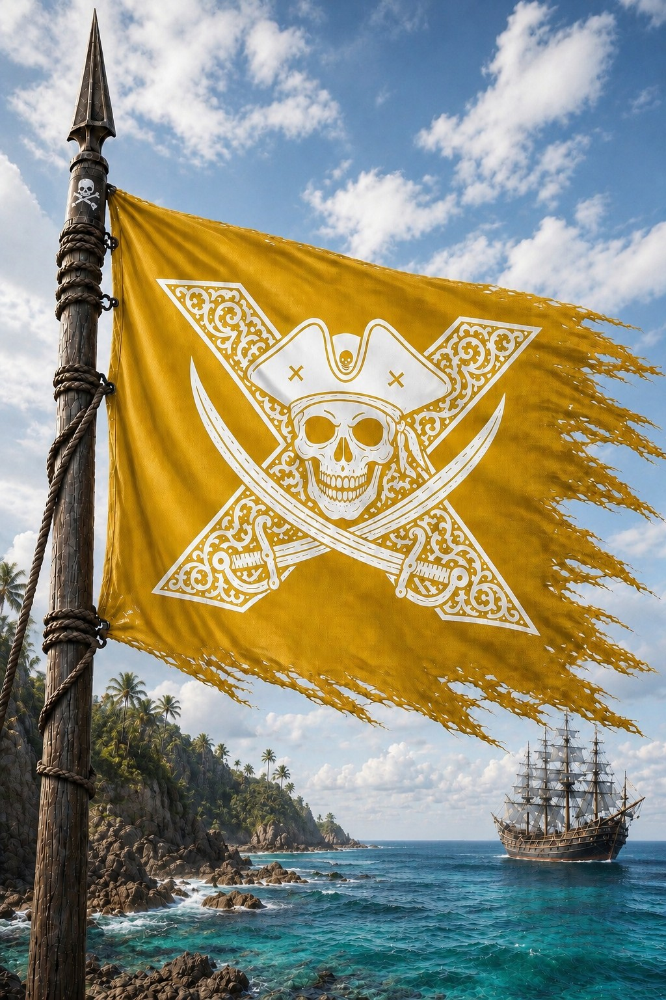
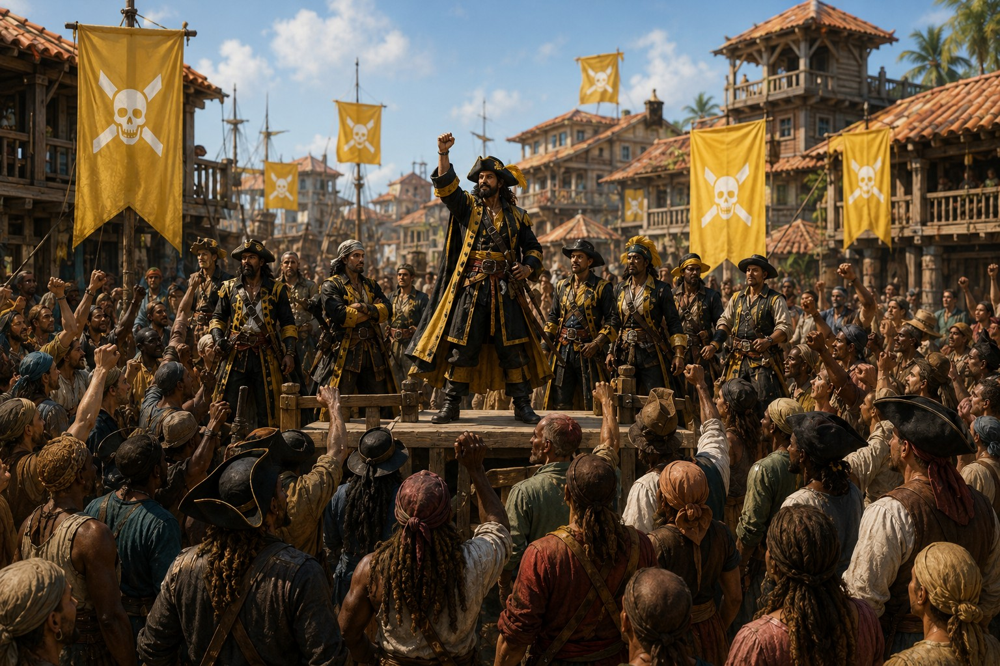
Un royaume d’opportunités
Ports fortifiés, repaires cachés et marchés flottants accueillaient pirates, corsaires, contrebandiers et aventuriers de tous horizons. L’immense flotte de l’Enclave imposait des tributs, protégeait certains convois et lançait des raids contre les royaumes côtiers.
Les richesses étaient fortement taxées puis redistribuées afin d’éviter l’effondrement des équipages et des îles. Ce système collectif n’effaçait ni les ambitions ni les rapports de force, mais garantissait que la nation survive à ses propres excès.
Rester maître de son destin et refuser toute couronne capable d’enchaîner l’Enclave.
Protéger son équipage, partager le risque et tenir les serments qui garantissent la survie en mer.
Vaincre par l’audace, la vitesse et l’intelligence lorsque la force brute ne suffit pas.
Le pouvoir au bout du sabre
L’Amiral commande la flotte, mais le Conseil décide des guerres, des alliances, des expéditions et du partage des territoires. Vote, réputation et rapport de force s’y mêlent sans jamais abolir le crédo commun.
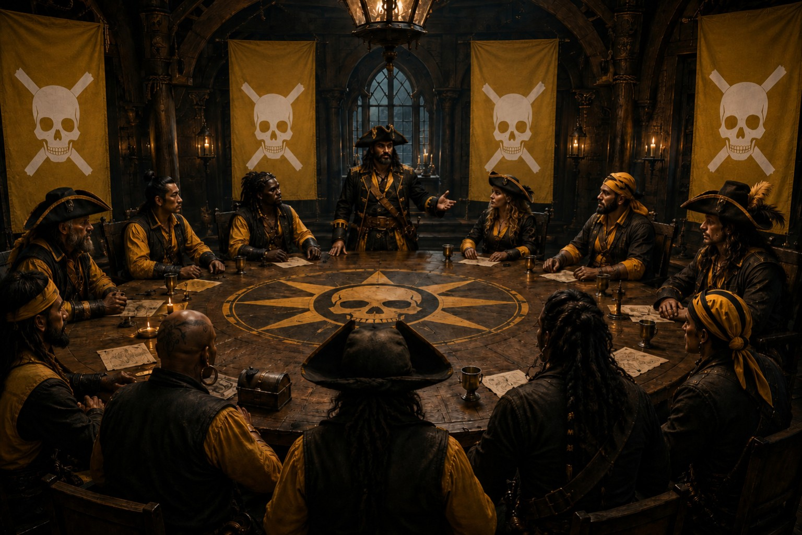
Chef suprême élu ou imposé par la puissance, il réunit les flottes et représente l’Enclave. En son absence, un capitaine du Conseil gouverne.
Les capitaines les plus puissants y votent guerres, alliances et expéditions. La sélection dépend du choix de l’Amiral ou de duels entre prétendants.
Autonomes à bord, ils restent responsables devant le crédo, leur équipage et le Conseil lorsqu’ils menacent l’équilibre commun.
Chaque île protège ses arsenaux, ses marchés et ses routes. Garnisons et batteries permettent une mobilisation rapide.
Véritables cellules politiques de l’Enclave, ils accordent réputation et autorité à ceux qui prouvent leur valeur.
Hiérarchie sociale
Chef suprême de la flotte et premier arbitre du Conseil Noir.
Commandant des forces terrestres, des garnisons et des défenses portuaires.
Chef de flotte influent participant aux décisions majeures de l’Enclave.
Commandant d’un navire, responsable de son équipage, de son butin et de sa réputation.
Rangs militaires
Remplace le capitaine et maintient la cohésion de l’équipage.
Officier chargé des ressources, des parts et de la discipline quotidienne.
Combattant d’élite spécialisé dans les abordages et les raids rapides.
Marin et soldat formant le cœur de chaque équipage.
Mercenaire autorisé à combattre pour l’Enclave ou l’un de ses capitaines.
ConseilLe Conseil Noir juge avec un citoyen au siège alternant ; aucun appel n’est possible.
CrédoLes règles du bord et de l’Enclave s’appliquent à tous ceux qui partagent le pavillon.
CaptifsLes prisonniers peuvent être asservis, mais racheter leur liberté par l’or, le service ou un acte de valeur.
FinalitéLa justice protège d’abord la cohésion de la nation et l’autorité de ses pactes.
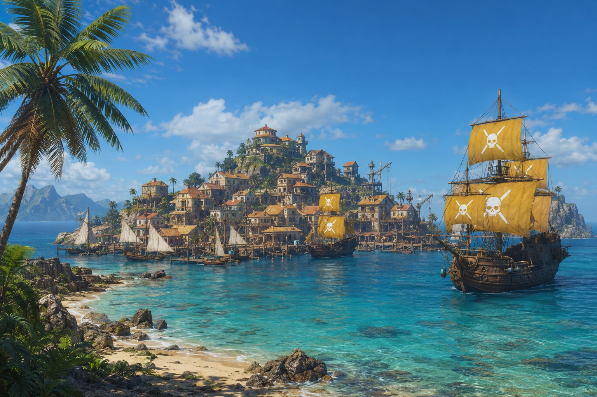
L’âge d’or avant la chute
Navires chargés de trésors, tavernes ouvertes jusqu’à l’aube, chantiers navals et routes secrètes firent de l’Enclave un royaume légendaire. Un code d’honneur maintenait une forme d’ordre au cœur du chaos — juste avant que le Cataclysme engloutisse cette domination maritime.
Histoire et fondation
Quatre livres racontent la naissance des clans libres, les grands pactes maritimes, les crises internes et la dernière nuit de Port-Cendre.
Des clans ennemis fondent une enclave libre, fortifient Port-Cendre et imposent leur pavillon sur les routes de l’Ouest.
L’archipel n’était qu’un chaos de clans pirates, de mutins et d’esclaves en fuite. Kael Virestorm comprit que leurs rivalités les livreraient aux puissances étrangères et proposa une union fondée sur l’intérêt commun plutôt que sur l’obéissance.
Lorsque des envahisseurs tentèrent de purger les îles, les clans combattirent ensemble et remportèrent une victoire décisive. Ils fondèrent l’Enclave, reconnurent Kael comme premier Amiral et jurèrent qu’aucun roi ne régnerait au-dessus des vagues.
« Aucun roi au-dessus des vagues. »
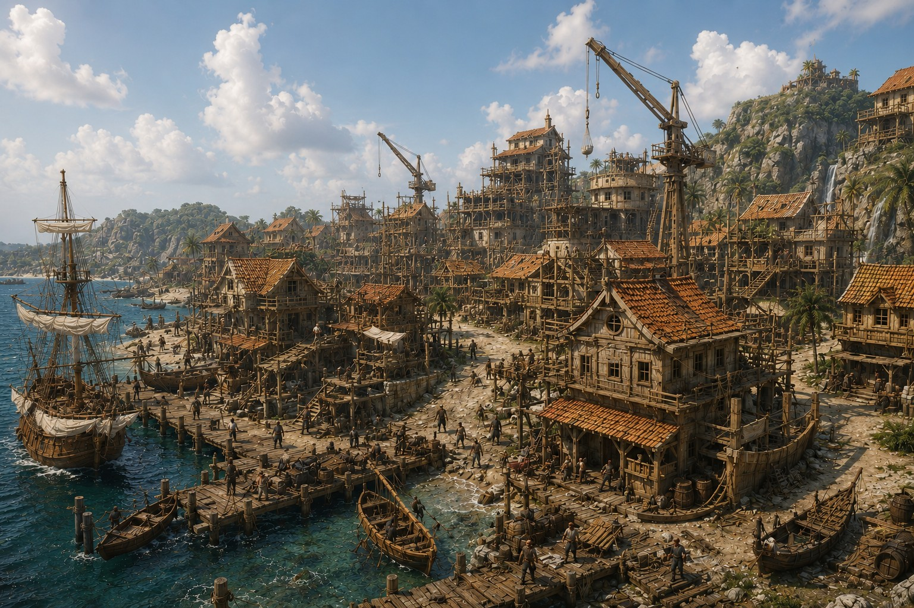
Les bandes furent réorganisées en flottes professionnelles soumises aux lois du Conseil Noir. Ports, arsenaux, forteresses et batteries côtières transformèrent l’archipel en réseau défensif capable de résister aux royaumes voisins.
Une baie entourée de falaises noires et de récifs devint le refuge permanent des capitaines. Quais, tavernes, forges et caches s’étendirent jusqu’à former Port-Cendre, cœur politique et économique de l’Enclave et siège du Conseil Noir.
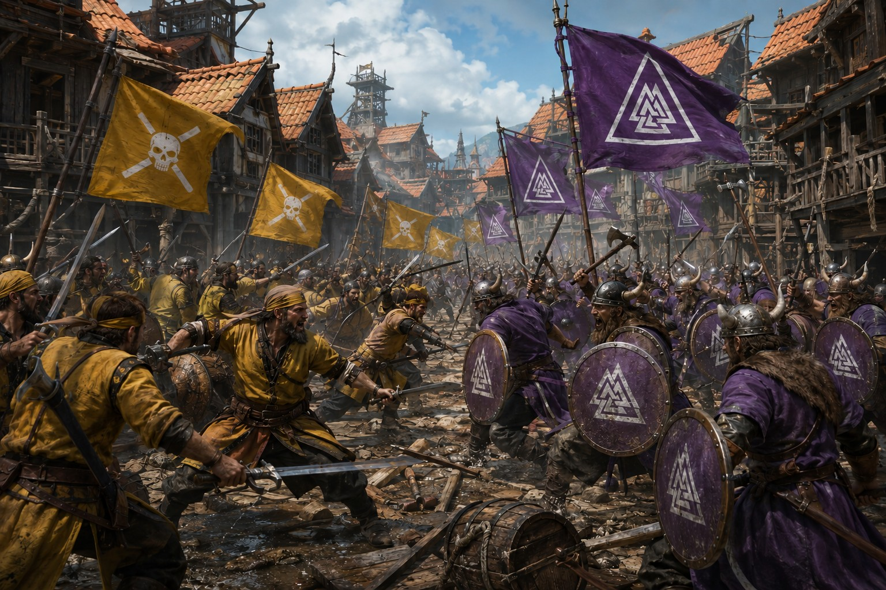
À la mort du Grand Amiral Virestor, les Loups d’Écume, la Couronne Rouge et les Veilleurs Abyssaux s’affrontèrent pour le contrôle de l’Enclave. Maelys Varn mit fin à la guerre en faisant assassiner les trois amiraux rivaux lors d’un banquet de paix.
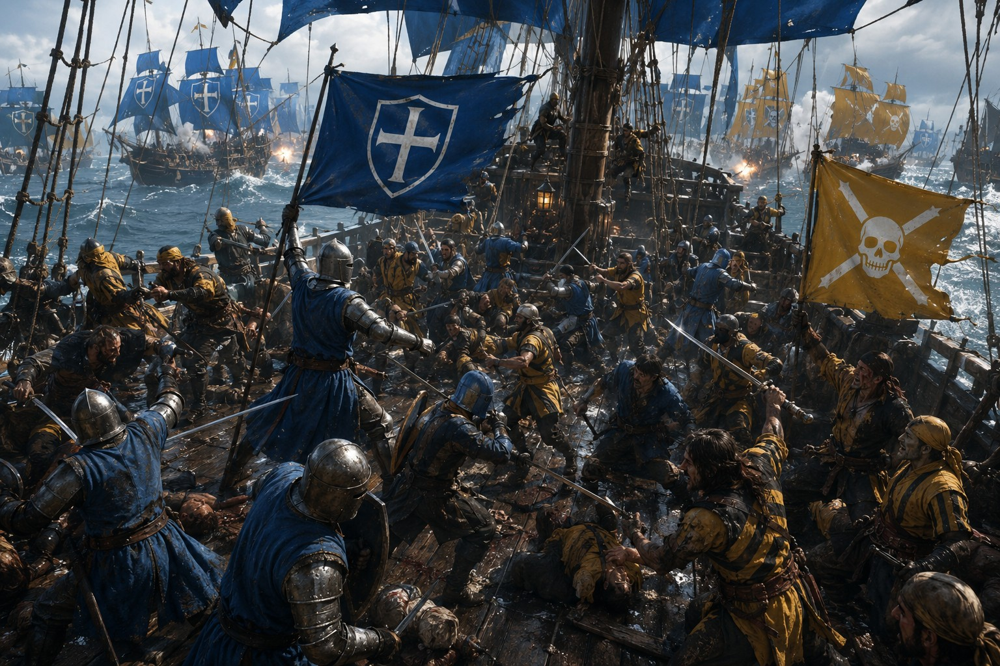
Les raids contre les convois de la Couronne déclenchèrent des années de batailles navales. Les galions vanloriens dominaient le combat frontal, tandis que les corsaires frappaient par embuscades. La bataille des Côtes d’Argent épuisa les deux camps sans vainqueur.
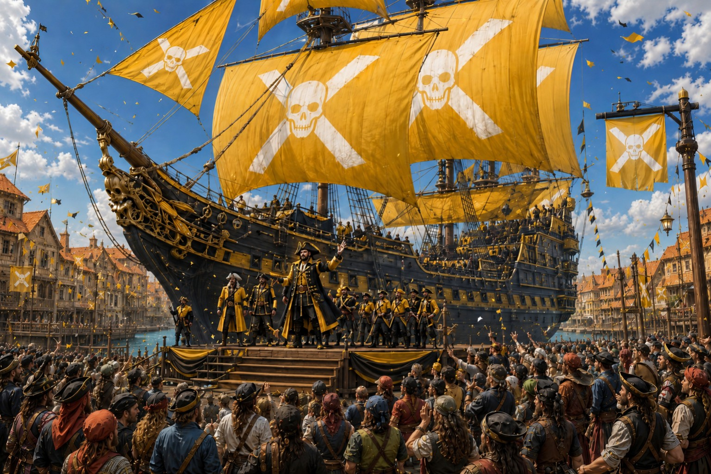
Nerethis taxa les routes, protégea certains convois et vendit ses services. Marchés flottants, lanternes de méduses et cargaisons venues des abysses firent de Port-Cendre l’un des ports les plus riches du monde connu.
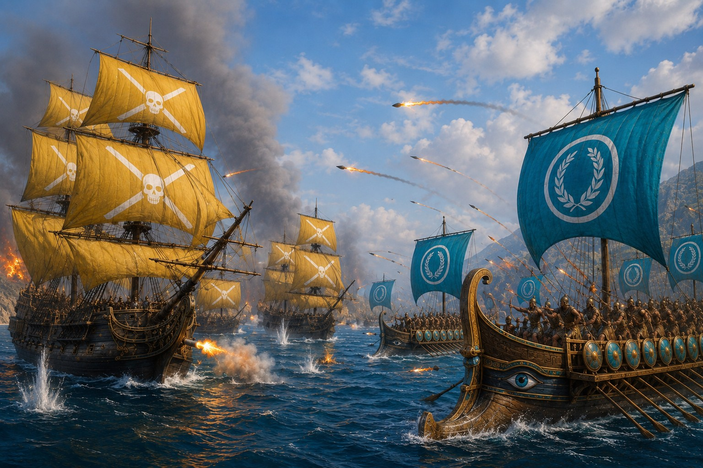
Après l’exécution de capitaines pirates, le Conseil Noir déclara la guerre à Erythros. Sabotages, brûlots et attaques nocturnes compensèrent l’infériorité numérique de Nerethis.
La Nuit des Lanternes Rouges brisa le siège de Port-Cendre, puis la bataille du Cap Noir anéantit une grande partie de la flotte républicaine. Le traité reconnut l’indépendance de l’Enclave et son contrôle sur plusieurs routes stratégiques.
Une tempête coupa les ports, engloutit des flottes et transforma l’archipel. Lorsqu’elle cessa, de nouvelles îles et des épaves chargées de trésors apparurent au cœur de la Mer des Cendres.
Explorations, alliances impossibles et guerres civiles montrent combien l’équilibre de Nerethis reste fragile.
Des navigateurs découvrirent un archipel de lumières nocturnes, de chants sans origine et de silhouettes fugitives. Malgré les présages, Nerethis y établit des postes avancés et des criques secrètes.
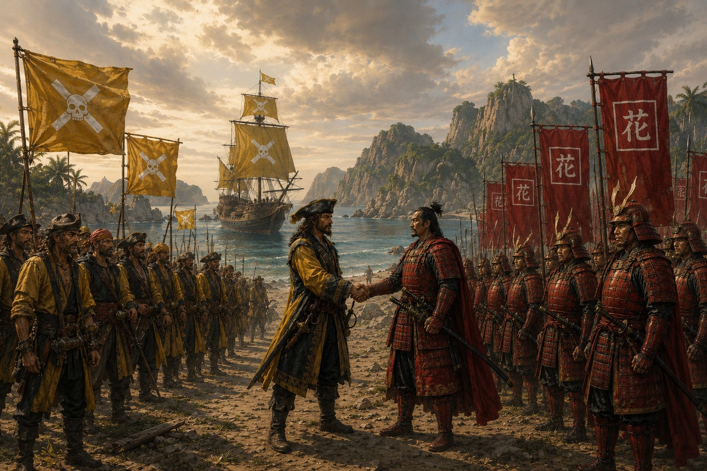
Autour de récifs volcaniques et de brouillards artificiels, corsaires et escadres shintaniennes s’affrontèrent durant des années. Un traité fragile partagea l’influence sur l’archipel sans effacer la rivalité.
Sept capitaines assassinèrent des membres du Conseil pour offrir une couronne absolue à Darius Mordren. Dockers, marins et habitants se soulevèrent ; les conspirateurs furent pendus aux falaises de Karthis.
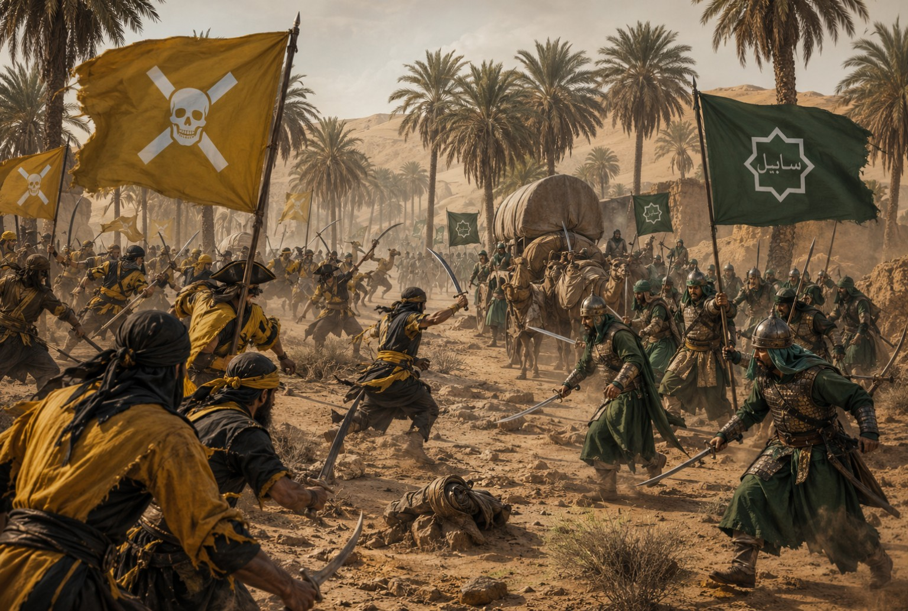
Le commerce des épices et la protection des convois avaient uni les deux royaumes. Lors de la Nuit des Lanternes, les batteries du port de Zahir détruisirent une flotte nerethienne prise au piège, brisant le pacte et déclenchant des représailles.
Une maladie provoquant sang vert, cécité et folie se répandit depuis Port-Cendre. Son origine fut attribuée à un minerai volcanique toxique, mais trop tard : près d’un tiers de la population périt.
Affaiblie par la peste, l’Enclave reçut l’aide inattendue des peuples abyssaux. Leur savoir permit de naviguer dans les tempêtes magiques et d’empêcher les puissances voisines de profiter du désastre.
Profitant d’un blizzard, les corsaires infiltrèrent le fjord et incendièrent la flotte de Falkheim. La Horde jura de laver l’affront dans le sang et multiplia les expéditions de vengeance.
Les anciennes flottes refusaient d’abandonner la piraterie tandis que les élites marchandes réclamaient la stabilité. Cinq années de guerre culminèrent dans le détroit d’Ulmar, où deux cents navires combattirent sur une mer couverte d’huile enflammée.
Kraken, crises, esclavage et conflits étrangers confrontent l’Enclave à ses propres contradictions.
La capture de L’Astre Éternel et de la relique du Premier Roi provoqua l’intervention d’une immense armada vanlorienne. Au Détroit Noir, brûlots, chaînes sous-marines et abordages brisèrent la flotte ennemie, mais coûtèrent à Nerethis plusieurs ports cachés.
Des corsaires infiltrèrent un port du Nord et dérobèrent le navire personnel de son roi. Rebaptisé L’Ombre Cendrée, le vaisseau devint un symbole de l’audace nerethienne.
Ancienne corsaire et stratège, Seraphine Vale modernisa les ports, créa une flotte permanente et codifia les lois maritimes. Son titre de Reine Écarlate resta une exception provocatrice dans une Enclave ennemie des couronnes.
Une flotte de chasseurs encercla le Kraken Noir après des semaines de traque. Harpons, balistes et canons finirent par l’abattre ; ses os furent suspendus dans la salle du Conseil Noir.
L’hiver poussa Hrothgar le Briseur de Glace à envahir les îles de Nerethis. Après le désastre des Dents Blanches, l’amirale Lysandra Vex mena une guerre d’usure faite de sabotages et d’attaques nocturnes.
Au Fjord Noir, des navires remplis de poudre et d’huile incendièrent la flotte nordique. Hrothgar mourut sur son drakkar et la Horde se dispersa.
Blocus, guerres et pertes commerciales vidèrent les ports. Des capitaines attaquèrent même des navires nerethiens avant que de nouvelles routes orientales ne permettent une lente reprise.
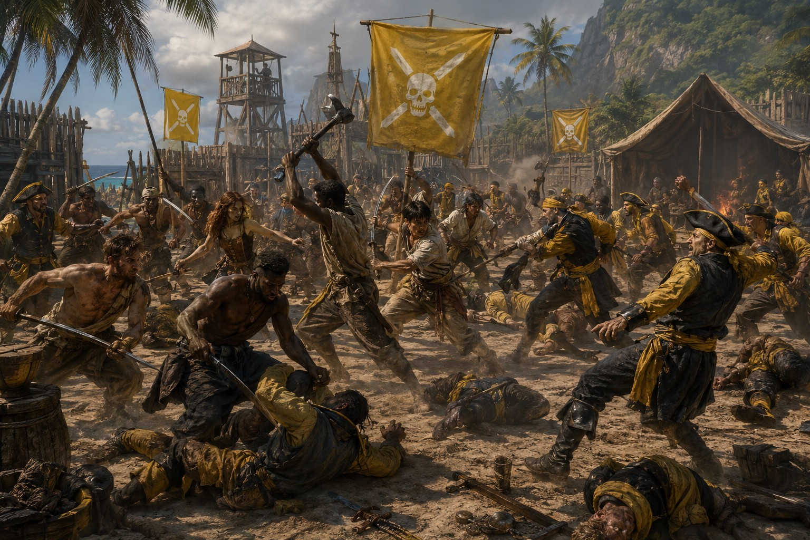
L’ancien rameur Flint Dornal libéra des captifs, prit des ports militaires et incendia les arsenaux. Le Conseil abolit l’esclavage maritime pour arrêter l’insurrection, mais un nouvel Amiral rétablit ensuite l’ancien système. Flint disparut sans laisser de trace.
Corsaires et flottes ashariennes s’affrontèrent plusieurs semaines près des côtes désertiques. Aucun camp ne l’emporta ; le passage fut finalement garanti contre or, épices et nouvelles relations commerciales.
Les profondeurs s’éveillent, Port-Cendre tombe et les survivants traversent la fin d’un monde.
Des créatures capables de briser des galions attaquèrent les villages portuaires. Les pirates les repoussèrent en incendiant la surface de la mer avec une huile alchimique, mais déclarèrent plusieurs zones interdites.
Après des affrontements autour des Îles Silencieuses, Shintai et Nerethis ouvrirent des ports communs. Soieries, armes, techniques navales et réseaux clandestins enrichirent les deux peuples durant près de soixante ans.
Des vaisseaux aux équipages morts sortirent des brumes du Nord. Après douze années de guerre, ils furent repoussés au Gouffre de Sel, laissant une grande partie de l’archipel dévastée.
Poissons marqués de brûlures, silhouettes sous les coques, boussoles folles et îles déplacées annoncèrent le désastre. Un voile rouge couvrit l’horizon et les oiseaux désertèrent Port-Cendre.
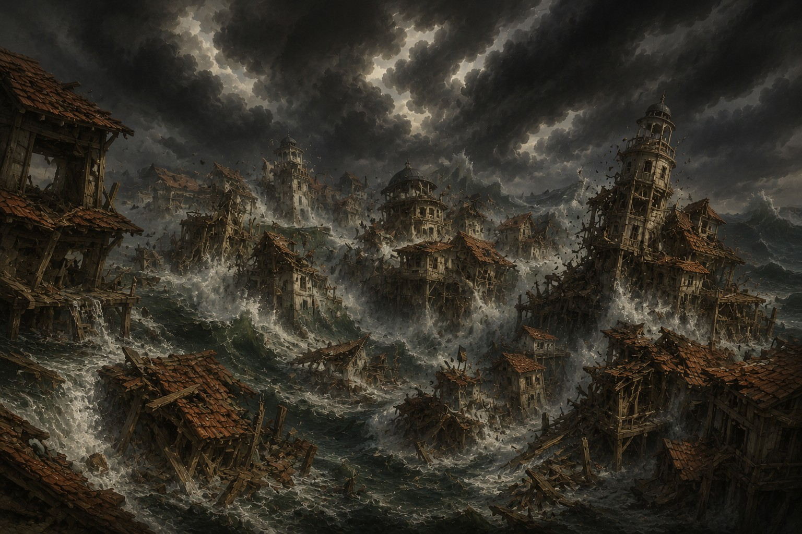
Durant une fête, les cloches sonnèrent seules et l’océan se retira, révélant ruines et statues englouties. Une vague noire pulvérisa les ports ; derrière elle avancèrent des créatures d’eau sombre et de magie ancienne.

Canons retournés vers les rues, bombes alchimiques et charges désespérées protégèrent les civils. Puis les eaux du cratère bouillirent et un titan d’eau et d’énergie violette s’éleva au-dessus de la capitale.
Le dernier Amiral planta l’étendard au sommet du Bastion avant de charger le titan. Il gravit son corps liquide, atteignit l’abîme lumineux qui lui servait de visage et s’y jeta avec sa lame.
L’explosion fendit les nuages et souleva la mer. Dans cette lumière violette, Port-Cendre et l’ancien monde disparurent.
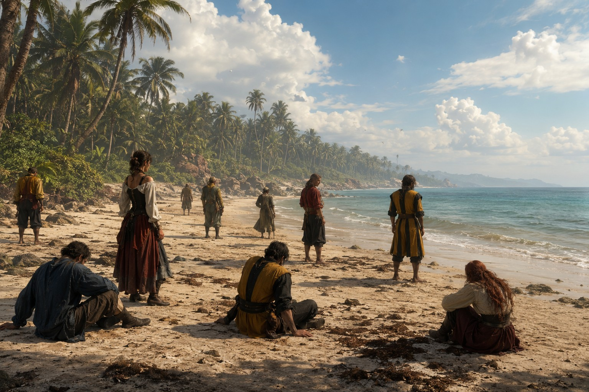
Quelques survivants ouvrirent les yeux sur des plages inconnues sous des étoiles différentes. L’Enclave avait disparu, mais ses derniers enfants possédaient encore leur liberté, leur ruse et leur volonté de reprendre la mer.
Le début d’un nouvel âge
Sur des plages inconnues, les survivants n’avaient plus de flotte, plus de Conseil et plus de trésor. Il leur restait pourtant l’essentiel : la fraternité, la ruse et la conviction qu’aucune mer ne demeure sans route pour ceux qui osent la prendre.